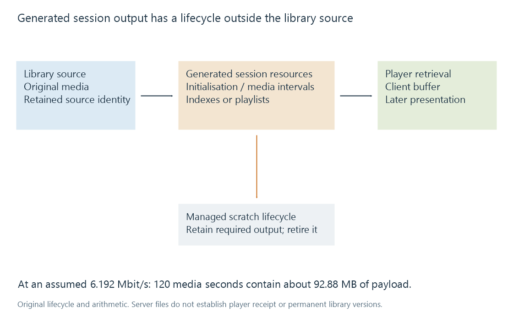

Transcode temporary files and generated output
Transcode temporary files hold generated session output whose size, availability and lifecycle differ from both the original media and the client’s playback buffer.
A playback conversion can create generated output for the session: media chunks, container initialization data, indexes or playlists. Those resources differ from the original library media and from data the player has already received.
Their lifecycle belongs to the conversion/delivery job. A file's existence on the server does not mean it is a permanent alternative edition or a usable interval currently buffered at the client.

Ready media occupies bytes
Assume an original constant-average output of 6.192 Mbit/s. Preparing 120 seconds of output represents:
6,192,000 bits/s × 120 s / 8
= 92,880,000 bytes
Under an additional six-second-segment assumption, one interval carries about 4,644,000 payload bytes and twenty intervals cover those 120 seconds.
These are arithmetic assumptions, not Emby segment or throttle defaults. Container overhead, indexes, bitrate variation and any retained earlier data add other space.
If the model also retains thirty seconds behind playback, that adds about 23,220,000 payload bytes. Retaining past output and producing future output are different contributors to the stored set.
Server output and player buffer
A generated interval can exist on disk before the player requests it. The player can also retain data after its corresponding server-side resource is no longer needed under a suitable lifecycle policy.
A progress bar based on media position, a list of generated files and the player's buffered ranges therefore describe different states.
A filename also does not prove a completed usable resource. A process can have created a file while still writing it, and a dependent index may not yet expose it.
The temporary directory has an owner
Emby's Transcoding documentation describes its temporary location as writable scratch space that the server manages and cleans. It is a dedicated generated-output area, with a lifecycle different from source storage.
Access failures, full storage or a blocked writer can prevent usable output even when the video encoder itself is working. Several sessions can also combine their write/read demands.
The cleanup responsibility matters because files in that location are not ordinary archival library assets. Output still required by an active session needs to remain available under the applicable implementation policy.
A seek can require another output region
A seek beyond prepared media can cause new generation from another source location. Older intervals might become irrelevant to the request, but their actual deletion/reuse behavior depends on the delivery implementation.
Generated output does not make the whole original programme seekable under every player path. Seeking needs resource, access-point and timeline context as well.
See Also
- Transcode throttling and producer lead
- Buffering, ready media and playback reserve
- Concurrent playback workloads
- How a transcoding pipeline works